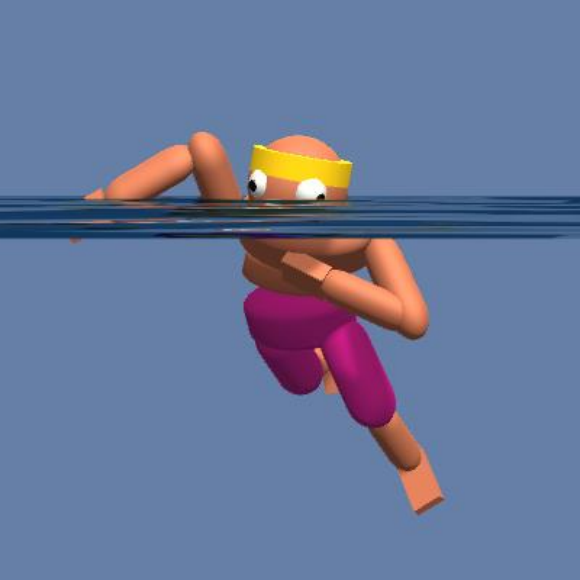
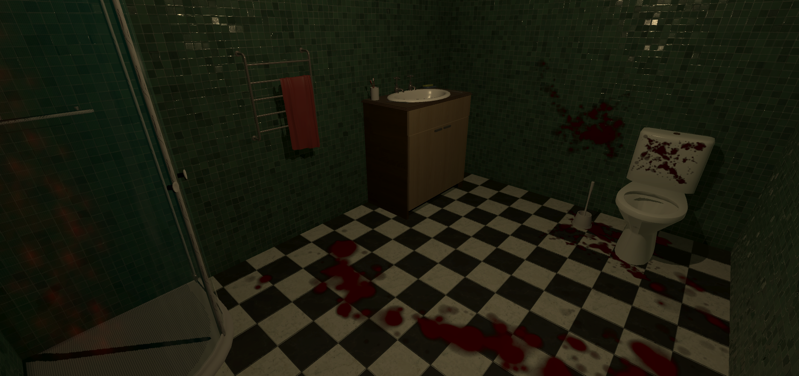
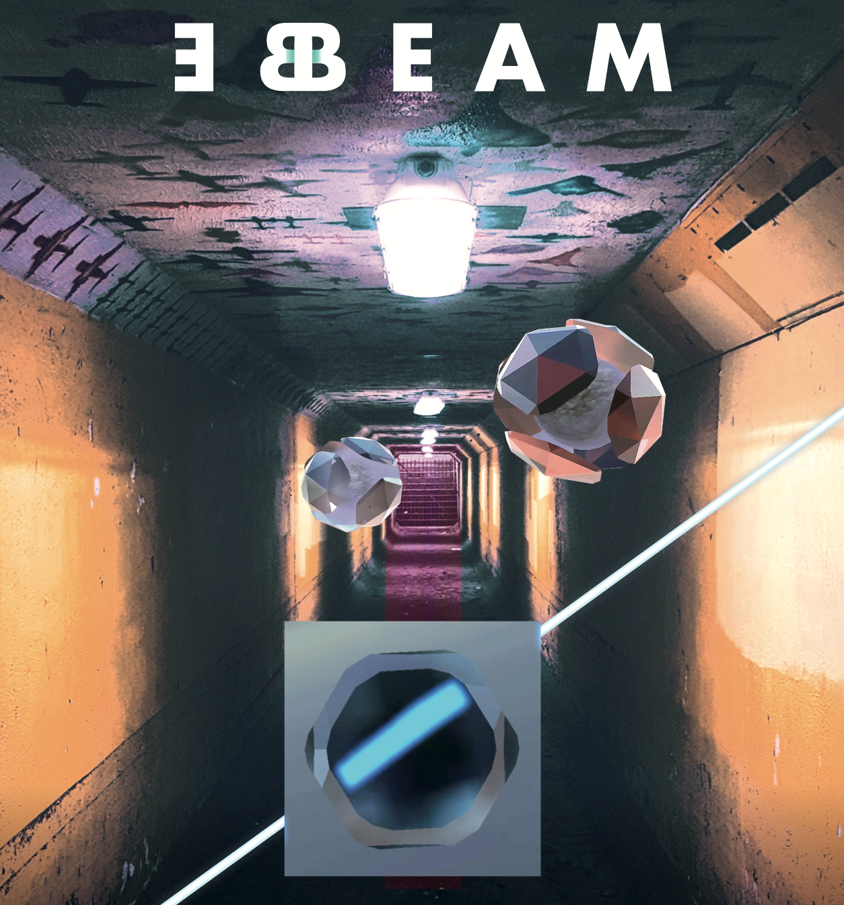
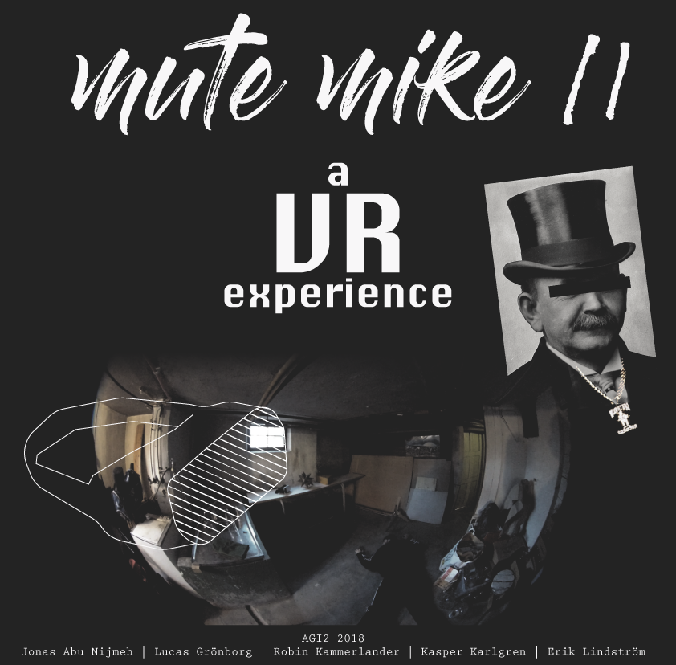
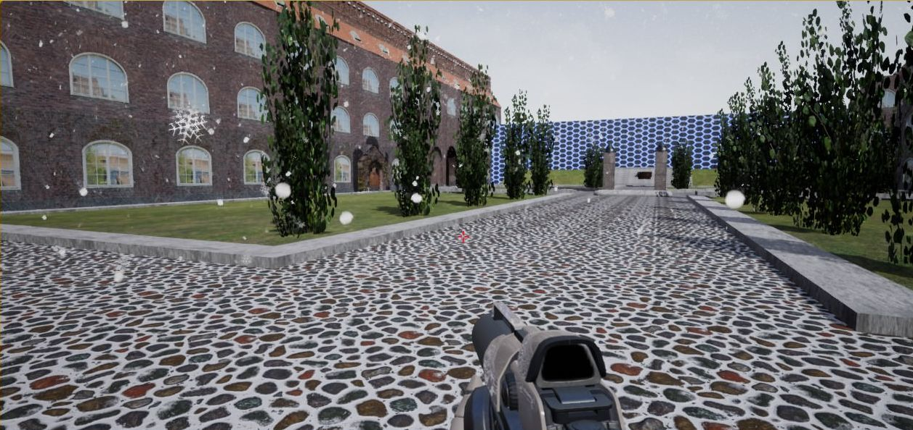

Erik Lindström
M.Sc Interactive Media Technology | KTH
I am currently working as a consultant at Cybercom where I'm implementing a DevOps solution for Delaval. I graduated my Master of Science and Engineering at KTH at the Media Technology program 2019. My master was in Interactive Media Technology with Visual Media as track. My passion lies with immersive technology, computer graphics and rendering/simulations as well as front-end development. I am eager to get into new technologies and strive to learn as much as possible. My hobbies include going to the gym and telling terrible puns. I can play most songs on Expert difficulty on Guitar Hero.

Procedural Swimming Animation of Humanoid Character, 2019
Machine Learning, Computer Graphics
In this project, swimming animations are created using UnityML
version 0.6 with their Reinforcement Learning training agents, using the policy PPO, created
by OpenAI. A humanoid character is placed in a simulated water environment and propels itself
forward by rotating its joints. The force created depends on the joints mass and the scale of the
rotation. The animation is then compared to a swimming animation created using movement
capture data. It is concluded that the movement capture data animation is significantly more
realistic than the one created in this project. The procedurally created animations displays many
of the typical issues with reinforcement learning such as jittering and non-smooth motions.

House Next Door, 2018
Computer Graphics
A psychological horror based VR game developed for The HTC Vive. The goal is to escape a haunted house by solving puzzles, all while the the horror increasingly ramps up to terrible levels. It was developed by myself and Bjarni, with the rest of the team members focusing on the economic aspect of producing a game. I did game design, effects, models, arch viz and optimization for the game.
This project was developed toghether with Bjarni Guðmundsson.

BeBeam, 2018
Computer Graphics
The first project in the course Advanced Graphics Interaction given at KTH. Our group developed an AR app with puzzle elements in mind. The goal is to redirect a light beam to a target. To do this, the user places mirrors in the real world that reflect the beam. My responsibilites included the game mechanics, i.e. how the light beam behaved and interacts, as well as effects, such as particle systems, virtual shadows on real world objects and blender models. On the website, you can find a downloadable demo as well as more information about my work with the project.
This project was developed toghether with Kasper Karlgren, Lucas Grönborg, Jonas Abu Nijmeh and Robin Kammerlander.

Mute Mike 2018
Computer Graphics
The second project in the course Advanced Graphics Interaction given at KTH. Our group developed an interactive storytelling app in phone-based VR. You play the character Mute Mike, ex rapper, detective as hobby, is set to solve a murder mystery in a shady cellar. Mike is mute and thus must communicate by nodding and shaking his head to advance the story. My responsibilies included the game aspects such as VR with 270 degrees video, as well as solving interaction by head gestures.
This project was developed toghether with Kasper Karlgren, Lucas Grönborg, Jonas Abu Nijmeh and Robin Kammerlander.

KTH Courtyard, 2018
Computer Graphics
A solo project for the course Computer Graphics and Interaction given at KTH. I decided to render a photorealistic version of the KTH courtyard in Unreal Engine. I worked in Maya to create all wall meshes with respective textures. I created sound system, day and night system and a snow particle system. The particle system also incrementally increases the amount of snow on the ground, starting by filling in the cracks on the stonework. More information on how I did this is in the blog listed below. The project is not on github, and until I get off my ass to add it, the only documentation is the blog used for by my examinator to grade my progress.

Mission Emission, 2018
Front-end Developer
Our project in the Information Vizualization course given at KTH. Our group took an offer from Stockholm Environmental Institute (SEI) to develop a prototype for vizualizing emissions via nautical export from brazil. I had the rol of front-end delveper and UX-designer. See the website for more Information!
This project was developed toghether with Gustav Bergman, Felix Norén, Petra Olsson, Anton Martinsson, Oscar Ström, Axel Weinz and Andreas Almqvist.

UniVRse, 2017
Developer
In this project we evaluated different controller and steering possibilties in virtual reality. We evaluated whether controller-based steering or head movement-based steering was superiour in regards to efficiency and effectiveness. We found that using the head to steer was better in all regards, and caused less motion sickness than that of a controller. We tested the steering alternatives through a flight simulator. Please have a look at the cool video!
This project was developed toghether with Felix Norén, Petra Olsson and Anton Martinsson.
Work
Developer, Cybercom Group 2019-ongoing
Did my thesis work in procedural animation from January through June.
Worked with Computer Graphics for an AR solution to visualize Autoliv's safety measures from May through October
Work with DevOps at Delaval, architecting an IoT solution in AWS, December to Ongoing
Education
Master of Science in Interactive Media Technology
Track Visual Media
August 2017- June 2019
KTH Royal Institute of Technology, Stockholm
Bachelor of Science in Interactive Media Technology
August 2014 - June 2017
KTH Royal Institute of Technology, Stockholm
Skills
Programming
C#, JavaScript, C++, HTML5/CSS, Python, Java
Tools
Unity, Unreal Engine, Blender, Maya, Houdini, AWS, Azure, Git
Frameworks
D3.js, Node.js, Bootstrap, ReactJS
Languages
Swedish, English, German